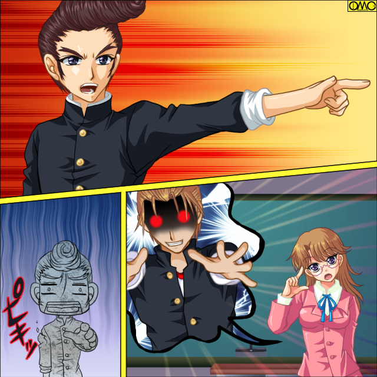

ゴッドファーザー乙女。前回の三つの出来事。
一つ。手のつけられない不良たちのクラスに美人教師。大原乙女が来た。
二つ。乙女はかつて不良で、しかも男だったと言う。
そして三つ目。不良たちの目の前で二人の少年が美少女に変貌した。
Ｃｏｕｎｔ ｔｈｅ ｓｔｕｄｅｎｔｓ
現在、少女になった少年は…
「尾藤美優（蛮）」「近田千鶴（忠一）」
「けっ。くそ面白くもねぇ」
秋津明義は不良らしく（？）学校をサボっていた。
目的は喧嘩だった。
授業中だが関係ねぇ。そう思い福真高校に乗り込み「高岩ぁ。喧嘩しにきてやったぞ。出てきやがれ」と叫ぶ。
挑発と言うよりたまった鬱憤を爆発させた。
「お待たせしましたぁ」
目当ての人物は長身の男子高校生。自分からは手を出さないが売られた喧嘩は必ず買う。
高岩清良（きよし）との喧嘩でストレスを晴らす目的だった。
ところが目の前に現れたのはセーラー服の女子生徒。
短い髪でのツインテール。メガネが可愛さを強調していた。
「何だお前？ 俺は高岩に用があるんだ」
「はい。あたしが高岩せいらです」
屈託のない笑顔。本当に１００％女の子だった。
「へっ？」
普通ならここで人違いと結論付ける。だがこの事例を秋津は知っていた。
「ま、まさか女になっちまった？」
「えっ？ やだ。どうして知っているんですかぁ」
可愛い声で無邪気に笑う。反対に秋津は怒り心頭だった。
（あのセンコー。ここでもなにかしてやがったのか？）
彼は文句を言うべく自分の高校へと出向いた。
ゴッドファーザー乙女
Ｌｅｓｓｏｎ２「魔法先生オトめ」
「くぉら。オカマ野郎っ」
怒鳴りつつ勢いよく教室に乗り込むと既に「先客」がいた。
「せんせーよぉ。いつになったら尾藤と近田は元に戻るんだよぉ？」
そりこみを入れた堂島大介が教壇の乙女に詰め寄っていた。
彼一人だ。多勢に無勢を嫌ったのではない。他は万が一にも女にされたくないから傍観していたのである。
（先にやっていたか。なら譲るぜ。堂島）
ちょっと気がそがれたのもあり、秋津も加勢はせずに見ていることにした。
「元にって…あの子たちは女の子よ」
乙女は相変わらずのスーツ姿。どうやら「教師はこうあるべし」と言うポリシーらしい。
「あんまりすっとぼけているとあんたにも全部パンチ食らわしてやるぞ。こらぁ」
精一杯すごんで目を剥くが奇妙な単語が引っかかる。
「全部？」「パンチ？」
怪訝な表情をする乙女と秋津。表情の変わる堂島。
「な、なんでもねぇ。ハートをキャッチなんてされて」
「ハートキャッチ？」
墓穴の底で墓穴を掘っている。
「堂島。オメーまさかオタクか？ アニメのキャラに対して『萌えー』とか言っている気持ち悪い奴なのか？」
彼自身「オタク」に対していい感情を抱いていない。どこぞの都知事のようだった。それが言葉ににじみ出て、そしてそのまま伝わったらしい。
「う…うう…あんまりだ」
厳つい大男がぽろぽろと涙をこぼし始めた。
「お…オイ？ 何も泣くことは」
しかし堂島は人目もはばからず泣きだした。崩れ落ちている。
「あぁぁぁぁぁんまりだぁぁぁぁぁぁぁっ」
その様子に秋津は戦慄すら覚えた。
「な、何だ。コイツ。血管ぴくぴくで怒ってくるかと思いきや予想外っ。怒るより逆に不気味なものがあるぜ」
「あんまりだぁぁぁぁ。俺のつぼみがぁぁぁぁ…ばかにされたぁぁぁ」
「ま、待て。別に俺は」
「アニメが好きで何が悪いんたよぉぉぉぉぉぉっ」
堂島は鬱屈を洗い流そうとして泣き続ける。
秋津は引くが乙女はそっと堂島を抱きしめた。
「……先生」
「好きなの？ アニメ？」
その声色や表情に嘲りはない。優しさだけが漂う。
まるで小さな子供が「お姉さん」に優しくされたように堂島大介はこくりとうなずく。
「注ぎ込む愛情があるのはいいことよ」
「…………先生は……俺のことバカにしないのかよ？」
「どうして？」
キョトンとした表情が可愛らしい乙女。堂島は対立していたにもかかわらず彼女に心を開いた。
「俺、アニメやマンガが大好きで。でもなめられたくなくて不良として振舞って。グッズ盗んでこのクラスに放り込まれたりもしたけど」
（そんな理由でここにきたのかよ）
秋津は声にたさずに突っ込みを入れる。
「泥棒はいけないわ。でも人に迷惑かけなければ好きなことをしていいのよ」
彼は泣き顔で見上げる。今度は理解者を得たことに対しての歓喜の涙。
「それじゃ俺、アニメ好きでもいいのか？」
「ええ。その欲望。解放しなさい」
「ば、ばか。堂島。その手に乗るな！」
思わず叫ぶ秋津だが遅かった。
「んあっ」
堂島は背筋をそらしのけぞる。何かが内側で爆発したかのような印象。
剃り込みを入れた髪が爆発的に伸びる。そして勝手に二つにまとまり左右に垂れ下がる。
服は以前の二人ように学校制服にはならず薄いピンクのブラウスと赤いミニスカート。ボーダーのニーソックス。
手にはパステルピンクのステッキ。いつの間にか髪の色もショッキングピンクに。
当然のように幼顔の少女。背も縮んでいた。
「で、でたーッ。城弾作品にかなりの頻度で出るツインテールがぁぁぁっ」
バラすな。それを。
「にゃ、にゃあ？」
当事者の堂島は変化に驚いて甲高い女声で叫ぶ。
このイラストはＯＭＣによって作成されました。
クリエイターの高天リオナさんに感謝！
「な、なんかこの声で二つお下げだとバンドのサイドギターって感じがするよ」
「くそうっ。堂島の女体化がこんな可愛いわけがない」
騒然となる教室。乙女だけは満足そうに微笑んでいる。
「あら。かわいい。それがあなたの理想なのね」
乙女は手鏡で堂島だった少女に新しい姿を確認させる。
「こ、これが俺？」
「俺」と言う自己代名詞がまったく似合わない高い少女声。
「すばらしい。新しい堂島君の誕生よ。Ｈａｐｐｙ Ｂｉｒｔｈｄａｙ。おめでとう」
乙女が拍手をして新しい少女の生誕を祝う。
「おめでとう」
自分が被害にあわなかったからか皮肉を込めてあちこちから「おめでとう」の声と拍手が。
戸惑っていた堂島だがだんだん明るい表情になる。
「そうかぁ。先生。この姿になるのはこんなにすばらしいことだったんですね」
何しろ目つきの悪い不良がアニメ張りの美少女だ。
「ええ。それでは新しい名前をつけてあげるわ。その華やかな姿。それならお花の名前。だりあちゃんでどう？」
「だりあ…堂島だりあ。あっ、ありがとうございます。先生。俺…ううん。あたしこれから可愛い娘になれるように努力します」
あっさり陥落していた。
そのあんまりな事実から目を背けたくなる秋津。だが意地で踏みとどまっていた。
（逃げちゃダメだ逃げちゃダメだ逃げちゃダメだ）
呪文のように唱えていた。
「それじゃ授業を再開します。遅刻して来た秋津君。この文章を読んで」
にっこり微笑んで指名した。彼女の担当教科は英語。当然だが英語の問題。
「お、俺？」
反発しようにも目の前でまた一人変えられて戦意をなくしていた。
仕方なく言われたままに文章を読みに掛かる。
文章は「ｔｕｒｎ ｔｏ ｂａｃｋ」だった。
「たーん…とぅ…ばっく…たー…と…たっとっばっ。たとばたとばっ」
まともに授業を受けてないのである。読めもしない。思わず変な節になって歌のようになってしまった。
「秋津くーん。音楽じゃないから歌わないでね」
「……歌は気にするな」
そのときだ。扉が開いて女子二人が入ってきた。
この場で変えられただりあをのぞけば該当者は二人だけ。
「ただいま戻りました」
声に元気がない。
「大丈夫。たくさん怒られたの？」
心配そうな声の乙女。
（おっ）
秋津は心中で嬉しそうな声を上げる。
既に少女と化していた二人。だがそれが怒られるほどのことをしでかした。
（まだワルの魂は残ってたか。尾藤。近田）
内心で喜ぶが
「あんなに怒らなくてもいいのにね。校則違反してないのに」
尾藤美優の唇は真っ赤に彩られていた。
「ホントウだ。おしゃれは女の特権なのに」
近田千鶴の頬は不自然に赤い。まつげも遠目にはっきりと見える。
二人とも化粧してきたので呼び出されていたのだ。
もっとも男子校である。「化粧禁止」は校則にはないので美優の言い分にも一理ある。
「…………」
秋津の顎がだらしなく落ちた。
「二人とも可愛いわよ。でもまだお化粧は早いかな？」
「私、早く先生のような大人の女性になりたくて」
だんだん「女の色気」まで出てきた千鶴。ポニーテールから見えるうなじが色っぽい。
「うふふっ。背伸びしたくなる御年頃よね」
言うなり乙女は二人の耳たぶをチェック。ピアスホールがあいていた。
近年では男でも珍しくはないが二人とも男の時はあけてなかった。
「えへへっ。可愛いのあったんですよ」
「女同士」ゆえかあっさりとばらす美優。スカートのポケットからアクセサリーを取り出す。
それは可愛らしい女物のピアスと指輪だった。
千鶴もセーラー服のスカートから同様のアイテムを取り出した。没収は免れたらしい。
どうやら「男性がスカートのチェックはしづらい」と言う知恵まで回りだしたようだ。
もっとも元々が男なので男性心理は熟知していて当然だが。
二人して指輪をはめる。左手の薬指に。その時の表情がうっとりしていたのをクラス全員が恐怖の目で見ていた。
どう見ても結婚願望のある女の表情だった。完全に頭の中から女になっていると。
もはや男が恋愛対象なのではないか？ そう思わせるほど『女』の表情だった。
「いいでしょー。先生。おそろいなの」
ひらひらと指輪を見せる美優。
「昨日二人で見つけてきたんです。まぁフェイクなんですけどね」
こちらは千鶴。
「えいっ。ウルトラタッチ」
いきなり左手を千鶴のそれにグータッチのように合わせる美優。
「いや。それはわからないからどちらかと言うと『でてこい！ シャザーン』の方が」
ポニーテールの美少女が言うと即座にリーゼントの突っ込みが。
「そっちの方がマイナーだろうがよっ」
突っ込む秋津にさらに突っ込むクラスメイト。
（突っ込みポイントが違う）と。
昼休み。学食でテーブルを共にする秋津。美優。千鶴。そしてだりあ。
これだけみていると秋津が女達をはべらしているように見えて体裁が悪いから人数あわせで男子二人をつき合わせていた。
金髪の江原栄治。福本富士夫は痩せ型に丸メガネと一見まともだが、どこか切れた雰囲気がある。
全員定食だったが女たちは明らかに食べるスピードが遅い。その上よくしゃべるから余計に進まない。
「そうか。おまえもか。堂島」
「うんっ。でもなってみるとわかるけど女の子っていいよね。男じゃ何かとオタクは白い目で見られるけど女だとそうでもないし」
「コスプレとかするの？」
「する。絶対する。こんなに可愛くなったんだもん。やらなきゃ嘘よ」
女三人で盛り上がっていた。
「まったくよ。お前らしまいにゃ嫁にでも行くんじゃねぇのか？」
「お嫁さん……いいなぁ。あたしはやっぱりウエディングドレスで」
「私はやはり和風で行きたいな」
ごく当たり前に嫁入りの時を想像している。秋津はいらついてきた。
「おい。てめーらも不良とまでいわれたんだろ。少しは硬派らしくしやがれ。そう。あの人のように」
怒ってばかりの秋津があこがれるような表情になる。
対して美優は「まぁたその話？」とうんざりしたようだ。
「もう耳にタコが出来たぜ」
これは黙って食事していた江原。食べ終わっていた。
「いいから聞け。あれは俺がガキのころだった。高熱を出してオフクロが俺を医者につれていこうとしたがその日は都内にはありえないほどの大雪で車の車輪がスリップして途方にくれていたときにその人は現れて男が命の次に大事にしているガクランを車輪の下にしいてスリップから助けてくれて俺自身の命も助かったんだ。俺にとってあの人は英雄で、あの人にあこがれて同じ髪型にしてんのさ。後であの人が『伝説の不良』と呼ばれここにいたことを知ったのでここに進学したくらいだし」
改行すらしないで一気にまくし立てた。恍惚の表情をしている。
「それがいいたくて私たちを呼びつけたのか？」
千鶴の言葉は質問と言うより確認だ。
「思うんだけど…Ｓ英社に怒られないの？ この話」
……いや……元々パロられることの多い作品だし。この程度は大目に見てくれると思う（弱気）
「とにかくよ。俺の中にはいつだってあの人の存在がある。だからお前らも思い出せ。不良としての誇りを。そうすれば男に戻れるかもしれないぞ」
「それなら既に私の中には理想の男がいる」
千鶴の言葉に嬉しそうになる秋津。
「ほう。なりたい自分か。どんなんだ？」
「ああ。やはり私より強い男だな。男ならではの力で私を軽々と抱きかかえて……バ、ばかっ。何をいわせるんだ」
頬を染める。元は男と知っていても可愛らしく見える。
「誰が理想の恋人を話せと言ったよ？ しかも男が相手かよ」
「えー。だって女の子だもん。あたしはちょっとくらいエッチな男の子がいいな。そのくらい積極的なほうが」
「あたしはオタクな男の子。自分を持ってるもん。それに趣味が一緒の方が楽しいわよ。二人で同人誌を作ったりとか」
「あのなぁ……ん？」
秋津は一つ気がついた。
（これって…みんな元の自分じゃねぇか？ どう言う事だ？）
秋津は仮説を組みたて始めた。三人が女性化した「魔法」について。
しかしその場にその「魔法先生」が現れて中断させられた。
「あら。楽しそうね」
朗らかに言う乙女。ランチのプレートを持っている。これかららしい。
「あっちにいけ」
邪険にする秋津だが乙女は特に気にせず用件を切り出す。
「ねぇ。誰かこれほしくない？」
プリンをおく。
「私ももらったんだけど職員室でチョコレートを食べ過ぎて…」
「ああ。女ですからね。甘い物の誘惑はね」
同意する千鶴。そして江原がほしそうな表情をしたのを見逃さなかった。
「それじゃ江原君にあげようかな？」
乙女も気がついていたらしい。
江原は一瞬喜びかけるが「不良のスタイル」と言うことで突っぱねに掛かる。
「プリンだぁー。けっ。俺は不良だぜ。プリンなんて女子供の食うものは…」
発言した途端に江原に変化が訪れた。
全体的に縮みだす。この辺りは三人の少女と同じだがさらに小さくなった。
まるで小学生である。髪の毛も快活な印象のあるショートカットに。
ガクランの下にはＴシャツだったがそれがキャラクターもののデザインに。
ズボンがミニスカートに。
挙句には江原の持ち物である潰れた学生カバンが飛んできて、その小さな背中に張り付き真っ赤なランドセルへと変化した。
きっちりと「女児」に変貌していた。
「え…江原ッ？ な、なんで？」
「江原君。いまうらやましいと思ったでしょ？ 人目を気にせず甘いデザートを食べられる『女子供』が」
「……それでかよっ！」
何が引金になるかわかったもんではない。
「か…かーわいー」
「ちっちゃーい」
「ほっぺぷにぷに」
本人が困惑しているが美優。千鶴。だりあは「母性本能」を刺激され次々と抱きしめる。
そのスキンシップで江原本人もだんだん「女の子」の気持ちになってきたらしい。
「あたし早く大人になりたい。お姉ちゃんたちみたいになりたい」
その言葉にまた内に秘めた女心が刺激される三人の少女。また抱きつかれる。
「あらあら。仲良しさんね。それじゃあなたはエリちゃんと言うことで」
江原栄介改め江原エリ。肉体年齢１０歳だった。
「ったく。ガキの高校生なんてどこの飛び級だよ」
悪態をつく秋津。ふと目を向けるともう一人の男子。福本が青い顔で震えていた。
「おい。どうした？ もう驚くほどのもんでもないだろう」
何しろこれで四人が変わってしまったのだ。
「ついに…ついに江原までが……次は俺の番だ…」
「はぁ？ 何だよそりゃ。いくらなんでも警戒し過ぎたぜ」
軽く笑い飛ばす秋津に真剣な表情で反論する福本。
「秋津。お前は法則に気がつかないのか？」
「法則？」
自分も考えていた。しかしそれとは違うらしい。
「尾藤。近田。堂島。そして江原。アルファベット順と言うことにッ！」
だからばらすなと。
「ああっ。そういや作者は不良Ａ Ｂ Ｃとしていて面倒だからとそれを基準にネーミングしたんだったな。ところでＬとかＱとかＸはどうするつもりだったんだか」
飛ばすに決まってる。
「Ｅの次はＦ。俺が次だ。もうだめだ。俺はもう男じゃいられない」
激しく気持ちが落ちていた。そして叫ぶ。
「絶望した！ しょーもないことで性転換することに絶望した！」
・古い薬と肺炎で性転換
・服に着られて性転換
・太古の遺恨で性転換
・放射線で性転換
・指輪はめたら性転換
・子宝の湯に浸かると性転換
・墓参りすると性転換
・大ぐらいだと性転換（巻き添えあり）
・酔っ払うと性転換
・人体実験で性転換…臨床実験といいなさい。
「はたして絶望かしら？」
ひっそりと後ろに立っていた乙女。秋津ですら気配を感じ取れなかった。
「あ、あんな姿にされて…」
希望など持てるかと福本は言いたかった。
しかし眼前の光景は仲むつまじい少女たち。明るく、そして健全だ。
「全ての希望を絶たれて…とことんまで堕ちたら新しい希望が見つかるわよ。破壊からしか再生は出来ないのよ。そう。かつての私のように」
不良として社会からドロップアウトした自分を破壊して、新しい姿でやりなおす。
それがひどく魅力的に見えた。
「せ、先生。俺…あれれっ？」
いつの間にかちゃっかりと少女になっていた。
どこか明治や大正の「女学生」を彷彿とさせるはかま姿。
身長も胸も控えめ。ただしすらっとした細い腕が魅力的。
そして何よりつややかな直毛の黒髪が美しかった。
切りそろえられた前髪がなおさらレトロ。
「まぁ。素敵。大正浪漫ね」
「素敵なもんかよっ。勝手に変えやがって」
「でもいやな気分じゃないでしょ？」
確かにそうだった。恐れていたのにいざなってしまうとそうでもない。
なってしまったのでもう恐怖が消えたのもある。
そして人生のリセットが出来たことに希望を見出した。
「先生。彼女にも新しい名前を」
千鶴が言う。なったばかりのエリを含めてみんな笑顔だ。
さげすむそれではない。気分のいい微笑だ。
「それじゃ文乃ちゃんで」
「文乃…それが新しい俺の…私の名前」
「ようこそ。文乃ちゃん」
美優が手を差し出す。新しい少女を歓迎している。
「やはり決め台詞は『二回死ね』よね」
もうオタクを隠す気がないからさっそくネタに走るだりあ。
泥の中をもがいていたのが雲の上に抜けた気分になった福本文乃。
「ああっ。ここに私の希望があったのねっ。先生っ。感謝します」
「がんばってね」
ほほえましいやり取りをよそに、頭痛薬を飲む秋津であった。
「ふっざけてんじゃねぇぞっ」
秋津は不本意ながら職員室に出向いていた。抗議が目的だ。
校長に直訴とも思ったが実はろくに校長の顔を覚えていない。
校長室に出向けば会えるのはわかるがなんとなく敷居が高い。
そこで乙女の前に担任だった男性教師に話をしに出向いた。
ところがその元・担任が見当たらない。
秋津は職員室のなかできょろきょろと見渡していた。
（まさか音古河の野郎も女にされた？）
そんなことを考えていたら眼前にとんでもない男が現れた。
「ゲイ」と言われて連想する服装のマッチョだ。ご丁寧に口ひげまである。
「お…お前。音古河」
美優や千鶴が女性化したその日、家族にはあっさり受け入れられた。
それと同じく秋津もこのマッチョが元の担任。音古河素樹（おとこが すき）と何故か理解できた。
ちなみに元々はきわめて細い女性的な男性だった。
その風貌から勝手にホモ呼ばわりを受けていたが
「秋津……やらないか？」
皮の着衣の前方のジッパーを下ろしながら言う。背筋が凍りつく秋津は音古河を殴り飛ばした。
「職員室で同性の教え子にアプローチかける教師がどこにいるよ？」
「いいじゃないか。恋愛は自由だ。私は解き放たれたんだ」
「！？……もしかしてあのオカマ……大原のせいか」
だとしたらなんでコイツは女にならない？
「彼女はすばらしい。私の性癖を蔑まずこうして理想の姿へと導いてくれた」
「理想の姿！？」
そう言えば尾藤は巨乳を欲して自分がなった。堂島もアニメ風美少女に。
（こいつはもしかすると…）
本来の目的である抗議を忘れ一計を案じる秋津。
この日の最後の授業はロングホームルーム。
新たに少女となった三人が紹介されていた。
恐怖する不良たち。だが反面その明るい少女たちにあこがれるものもいた。
秋津はどちらでもない。自信満々な笑みを浮かべている。
「それじゃみんな。彼女たちとも仲良くしてね」
乙女がその透き通る声で言うとアニメ風美少女。小学生女児。和風少女はぺこりと頭を下げた。
「せんせーよー。一つ聞かせてもらえねーかな？」
「何かしら？ 秋津君」
「せんせーはさ。どうしてその姿になったんだ？」
先生と呼んではいるが単に話を円滑に進めるためだけの目的で敬意などこもってない。
そして彼は乙女から聞きだして自分の仮説の裏づけをしようとしていた。
「そうね。それもいいわね。それじゃ話してあげる。あれは私がみんなくらいのころ。まだ男の子だったころよ」
乙女は遠い過去を思い出して語り始める。
高校二年の乙女。このころはまだ男で大原修（おおはら おさむ）と言う名の男子。そして「不良」だった。
背はさほどではないが男前。リーゼントがびしっと決まっていた。
修が従うのは自分だけ。自分の掟にのみ忠実だ。
納得が行かなければやらない。それが掟だった。
衝突したら場合によっては潰す。その対象は同類である不良に限らず何人もの教師を撃退していた。
ある日の事、今は女教師として通うこの学校で喧嘩をしていた。
腕っ節の強さは校内で知らないものはない。誰も彼を恐れて近寄らない。
彼自身もそれを勲章と考えていた。
そしてその腕前を聞きつけ倒して名を上げようとするものも少なからずいた。
それを学校で迎え撃ち「公開処刑」するのがある種の趣味と化していた。
この喧嘩ではエキサイトしすぎて相手を殺しかねないところまで追い込んでいた。
誰もが「むごい」と思っていた。しかし頭に血の上った修に意見するなど死にに行くようなものだ。誰も行かない。
ところが一人の老人が修の繰り出したパンチを受け止めた。
そしてその勢いを利用して修を投げ飛ばした。
「ギャラリー」の前で仰向けになってしまう修。
見物人の中には修に反感をもつものもいたので「無様ね」と笑われる始末。
「ほれ。立てるか？」
当の老人は処刑されかかっていた学生を助け起こしていた。
小柄な老人だった。髪は真っ白で中国をイメージさせる衣類を身に纏っていた。
「てめぇっ。何のまねだ！？」
「お前さんこそなんのつもりじゃ？ 勝負ならついていたであろう。その若さで外道に落ちたいか？」
「てめえが地獄に落ちろ」
近寄ると問答無用で蹴りを見舞う。いわゆるヤク…ケンカキックだった。
しかし老人はそれをかわすと起き上がりつつ「背中」で脚を払う。
「わわっ」
当然転ぶしかない。二度までも恥をかかされた。修の心が殺意で満ちる。
怒りのままに攻撃をするが一撃も当たらない。
「そんな攻撃では百年経っても当たらんわい。惜しいのう。いい物をもっているのじゃが」
「ぬかせぇっ。ぶっ殺してやる」
今の乙女からは想像出来ないほどすさんだ言葉遣いの修。しかしとうとう当てることが出来ず、先にやってたケンカの疲れもありばててしまった。
「ひょほほ。そろそろ暑くなると言うのにタフな奴じゃ。一発ですむところをこれだけ繰り出すんじゃからな」
「ば…ばかに」
もう口も利けない。喉がカラカラだ。
「ひょほほ。よかろう。暇つぶしにお前を鍛えてやろう。獣の拳ではなく、人の拳へと導いてしんぜよう」
「て…てめえ…何もんだ？」
「通りすがりの拳法家じゃよ。覚えておきなさい」
それから「修行」が続いた。
と言っても修がしたがうはずがない。彼がとにかく拳を繰り出し、通りすがりの拳法家…「老師」が避けるだけだ。
しかしこれがまったく当たらない。いつしか修の攻撃は無駄がそぎ落とされ洗練されて行った。
「そうじゃ。女人のごとく振舞え。女は非力じゃからな。その動きを真似れば無駄な力を使わずにすむ」
「るせえっ」
怒鳴りつつも知らず知らず最短距離を行くようになり、動きが小さくなって行った。
対立は続くのだがいつしか修は老師を崇めていた。
不良と忌み嫌われ両親すら見放した彼に対して、ここまでつきあってくれたその心に彼も心を開いたのだ。
拳で語りあっていたのである。
さんざんにやりあいそれでも一撃をくわえることが出来ない。
とうとう修は音を上げて強さの秘密を尋ねた。
「柳に風」
それが返答だった。
「なんだよ。それは？」
「どんな荒れ狂う嵐とてやんわりとした柳の枝は折れぬ」
「……そうか。俺はあんたに勝ちたい一心でひたすら打ち続けていたがそれはすべて流された」
「壁に拳をぶつければ拳は痛むし、壁も痛む。だが包みこまれれば誰も痛まない。そして攻撃をやめさせる目にはそれで充分」
「老師」はそっと修の手を両手で包みこむ。
（暖かい。なんて優しい手だ。俺の手は人を殴り続けて荒れているのに。本当に強い人間の手はこんなに優しいのか）
修の中で何かが変わる。
「修よ。包みこむ大きな心を持て。強いものとは優しいものだ。さぁ。生まれ変わった姿を思い浮かべてみよ」
言われるがままに目を閉じてイメージして見た。
全てを包みこむ、優しい自分を。
それは女だった。小さな動きの、そして敵意を微塵も感じさせない笑顔の女だった。
（これが……俺の求める姿？）
最初に感じたのは胸。そしていたるところから違和感を覚え彼は目を開けた。
「な、なんだぁっ？」
背が縮みはじめている。
逞しい肩は優しげななで肩に。
厚い胸板は優しい二つの膨らみに。
割れた腹筋を要する腹部はなだらかに変わりくびれて行く。
もともとしっかりした腰だったが、安産体型へと変わる。
太い腕は華奢な細腕に。足も細くなる。
肌の色が健康的な白になり、顔つきは優しげな女のものに。
リーゼントの前髪がさらさらと落ちる。
後ろ髪が異様なスピードで伸び、やや明るい色の癖ッ毛が背中の辺りまで達する。
服装も男子学生服がボレロに。
ワイシャツがスクールブラウスに。
ズボンが一番大きく変化してジャンバースカートになる。
革靴もローファーに。
「これは無限塾の（女子）制服…何だよ？ この声？」
声も透明な女声になっていた。
修は女子高生へと変化していた。
「ほほう。なるほど。女人か。それも道理」
「し…師匠。どうしてこんな風に？」
口調まで女性的になっていた。
「うむ。確かに女の大きな愛の前には男の猛りなど無意味。修。お前は男と言う枠すら飛び越えたのだ」
「すると…この姿は私の理想と？」
老師は頷いた。そして修だった少女は喜びの表情へと変わって行く。
「ああ。私は荒れ狂う獣から人になれたのですね。老師。お導きありがとうございました」
歓喜の涙を流しつつ手をとって謝意を示した。
「うむ。それほどのことをなしたお前だ。同じように道を踏み外した者たちを導くことも出来るじゃろう」
「はい。やります。私、先生になります。そして不良生徒たちを更生させていきます」
「人生の目的が見つかったか。門出に新しい名前を与えよう」
少女を改めて見る。男性的な部分がまるでない。それで思いついた。
「よろしい。お前は今日から乙女。大原乙女だ」
「はい。ありがとうございます。大原乙女。教師を目指します」
「それから猛勉強して何とか先生になれたのよ。そして今はここにいます。どう？ 参考になったかしら？」
まさか自分自身を変えていたとは。それでは他者などなおさら簡単に変えられそうだ。
不良たちは恐怖する。秋津をのぞいて。
「ああ。なったぜ。あんたの『魔法』の秘密がよくわかった」
不適な笑みを浮かべる秋津。立ち上がり乙女を指差す。無礼だが『謎解き』のお約束なのでやった。
「あんたは自分でも気がついてなかったが何かの能力者だ。それを最初に自分に対して発動させた」
探偵もののクライマックスで犯人を暴く気分の秋津は口も滑らかに「魔法」を謎解きして行く。
「どこかで読みかじったが人間には理想の異性が心にあるとかな。アミバだったか？」
男性の場合はアニマ。女性の場合はアニムスである。
「あんたの『能力』は心に潜む理想の人物と現実の自分を入れ替えることだ」
大原乙女のスタンド・ストレンジャー
| 破壊力−なし | スピード−なし | 射程距離−Ｃ |
| 持続力−Ａ | 精密動作性−Ｂ | 成長性−なし |
能力…現実の自分と心の中の理想の異性と入れ替える。
そのため男が女性化した場合はいきなり女性的になる。
また理想を反映させているので美人が多い。
Ａ−超スゴイ Ｂ−スゴイ Ｃ−人間並み Ｄ−ニガテ Ｅ−超ニガテ
「すっごぉーい。そうなんだぁ」
手を叩いて喜んでいる乙女。拍子抜けする秋津だが勝利宣言が残っている。
「だがその『魔法』は俺には通じないぜ。前の担任が女にならなかったことで証明されている。俺の心にはいつも憧れのあの人がいるからな」
ここで秋津は最高に気持ちよく憧れの存在。『伝説の不良』の話をした。
クラスメイトの大半は「またか」とうんざりしている。
乙女は興味深そうに聞いていたが
「あら。懐かしい。そんなこともあったわねぇ」
「へ？」
なんだと？ このリアクションはどういうことだ？
「それじゃあの時の自動車にあなたがいたの？ 病気は大丈夫だったみたいね。こんなに立派になったんですもの」
「ま…まさか…」
天国から地獄。
「ええ。それ私みたいね」
ぴしっ。秋津の心に皹が入る。
大事にしてきた思い出を破壊された衝撃は測り知りない。
（う…嘘だろ。俺が髪形を真似るほどあこがれた『伝説の不良』が『オカマ』に…）
秋津は現実を直視出来なかった。
現実逃避と妄想の中間を漂い続ける。
そして秋津は泣きたいと思っても泣けなかったので、考えるのをやめた。

このイラストはＯＭＣによって作成されました。
クリエイターの高天リオナさんに感謝！
「どうしたの？ 秋津君。ぼーっとして」
「……先生。そっとしてやってください。今はそれが優しさだと思います」
千鶴の言葉がクラスの総意だった。
次ー回。
秋津のこの手が真っ赤に燃える。
果たしてこの衝撃から立ち直れているか？
あとがき
『ゴッドファーザー乙女』のＬｅｓｓｏｎ２です。
起承転結の『承』で。
不条理ではありますが女性化の原理などに理屈付けで。
今回はパロディが暴走気味（笑）
メタ発言も増量ととんでもない展開に。
けどこの作品に関してはかなり制約がゆるいのでやっちゃいました(笑)
冒頭の『高岩せいら』は言うまでもなく『戦乙女セーラ』のそれで。
ＥＰＩＳＯＤＥ４０『少女』とリンクさせてあります。
とはいえセーラを書いていた時は『ＧＦＯ』は構想すらなく、完全に後付けですが。
このリンクが構想にあり、季節は同じ秋ごろの設定になってます。
乙女を鍛えた師匠は当初は「機動武闘伝Ｇガンダム」のマスターアジアのイメージでした。
しかし受け流すタイプと言うこともあり飄々とした人物に変更。
それにマスターはファンも多いので余計なトラブルを避けて。
秋津のあこがれた「伝説の不良」が実は乙女の変身前と言うのはある人のアドバスを受けて。
この場を借りてお礼申し上げます。
劇中にある通りネーミングはアルファベットで。
それでは「ゴッドファーザー乙女」Ｌｅｓｓｏｎ３「ハンター・ミッション」でお会いしましょう。
お読みいただきましてありがとうございました。
城弾
おまけ パロディ原典集
サブタイトル
今回は「魔法先生ネギま」から。
ゴッドファーザー乙女。前回の三つの出来事〜 現在、少女になった少年は…
「仮面ライダーオーズ」（以下オーズ）の前後編の後編のときに前編を振り返る時のパターンから。
「はい。あたしが高岩せいらです」
「戦乙女セーラ」＃３９で主人公のセーラは完全女性化。
そのため女子として登校した。そこで遭遇した。
全部パンチ
「ハートキャッチプリキュア」での必殺技。
「あぁぁぁぁぁんまりだぁぁぁぁぁぁぁっ」
「ジョジョの奇妙な冒険」（以下ＪＯＪＯ）第２部に出てきた敵。エシディシは怒る代わりに泣き喚いて心をすっきりさせる。
ちなみに腕を切断されての叫び。
「な、何だ。コイツ。血管ぴくぴくで怒ってくるかと思いきや予想外っ。怒るより逆に不気味なものがあるぜ」
上記の場面でエシディシと戦っていた２部主人公。ジョセフ・ジョースターがつぶやいた台詞から。
「ええ。その欲望。解放しなさい」
オーズに出てくる敵。グリードは人間の欲望を元に怪人（ヤミー）を作り出す。
グリードの一人。ウヴァがその際に言う台詞が「その欲望。解放しろ」
「にゃ、にゃあ？」
該当は多数あるがこの場合は「迷い猫オーバーラン」の霧谷希。「にゃあ」は口癖。
「な、なんかこの声で二つお下げだとバンドのサイドギターって感じがするよ」
ツインテールのサイドギターは「けいおん！」の中野梓。主人公からは「あずにゃん」と呼ばれている。
「くそうっ。堂島の女体化がこんな可愛いわけがない」
ライトノベル。そしてそれをアニメ化した作品「俺の妹がこんなに可愛いわけがない」
霧谷希。中野梓。この作品のヒロイン。高坂桐乃の声はいずれも竹達彩奈さん。
「こ、これが俺？」
ＴＳ物の定番台詞（笑）
「すばらしい。新しい堂島君の誕生よ。Ｈａｐｐｙ Ｂｉｒｔｈｄａｙ。おめでとう」
「オーズ」鴻上会長の台詞から。
ちなみにオリジナルは「ハピバースデイ」と言う感じの発音だが、乙女が英語教師と言うこともありここは英語で。
自分が被害にあわなかったからか皮肉を込めてあちこちから「おめでとう」の声と拍手が。
「新世紀エヴァンゲリオン」テレビ最終回の場面から。
（逃げちゃダメだ逃げちゃダメだ逃げちゃダメだ）
「新世紀エヴァンゲリオン」の主人公。碇シンジの台詞から。
「たーん…とぅ…ばっく…たー…と…たっとっばっ。たとばたとばっ」
「オーズ」の基本フォーム。タトバコンボ成立時にはこの歌が流れる。
「……歌は気にするな」
オーズ第一話で流れた歌に疑問を口にした主人公に対して言われた台詞。
「えいっ。ウルトラタッチ」
「ウルトラマンＡ」で男女二人が指輪を合わせることで変身する。その時の掛け声が「ウルトラタッチ」
「いや。それはわからないからどちらかと言うと『でてこい！ シャザーン』の方が」
海外アニメ。「大魔王シャザーン」で主人公二人が大魔王を召還する際に指輪を合わせ「でてこいシャザーン」と叫ぶ。
秋津の思い出話
ＪＯＪＯ４部の主人公。東方仗助の思い出そのまま。
「プリンだぁー。けっ。俺は不良だぜ。プリンなんて女子供の食うものは…」
ＪＯＪＯ４部。イタリアンレストランでのエピソードの締めくくり。
結局は美味しい物を食べて健康にまでなった虹村億康の台詞から。
ちなみにこれで水虫が治っている。
「ったく。ガキの高校生なんてどこの飛び級だよ」
該当作は割りとあるがこの場合は１０歳と言うことで「あずまんが大王」から。
主要人物の一人。美浜ちよは１０歳にして高校生へと進級した。
「絶望した！ しょーもないことで性転換することに絶望した！」
「さよなら絶望先生」主人公。糸色 望（いとしき のぞむ）の決め台詞とほぼ同じ。
余談だがこの迷セリフの初出は『絶望先生』ではなく、前作である「かってに改蔵」でヒロイン(笑)名取羽美（なとり うみ）が発した物が最初。
・古い薬と〜・人体実験で…
上記「さよなら絶望先生」及び「かってに改蔵」で頻出する「羅列ネタ」
そのエピソードのテーマにあった事例を並べるギャグ。
以下は全て城弾作品から
・古い薬と肺炎で性転換
「ＰａｎｉｃＰａｎｉｃ」の赤星瑞樹は中三のときに肺炎になりかけてもうろうした状態で飲んだ薬が十年以上前の物で、それを複数のんだのと肺炎と本人の体質が合わさり、回復した時は３０℃以下の水を被ると女になる体質になっていた。
ちなみに「らんま１／２」に対するリスペクトなのでこの設定。
・服に着られて性転換
「着せ替え少年」の二村司は流されやすい性格で、着た物に合わせて性格が変わる。
女性服だと性転換までしてしまう。
・太古の遺恨で性転換
「戦乙女セーラ」の高岩清良。伊藤礼。押川順は前世では戦乙女と呼ばれる少女だった。
・放射線で性転換
「ボーダーレス」のこと。太陽光線の異常で１９９９年７月のある日に日光を浴びたものは性転換をしてしまった。
全世界の四分の一が性転換したため元・男の女や元・女の男のために男女の垣根が無くなった。
・指輪はめたら性転換
「Ｍａｄｅ ｏｆ Ｆｉｒｅ」のこと。
マッドサイエンティストの実験で女性化。
なおこの話は読者投票で次を決めるという展開であった。
・子宝の湯に浸かると性転換
「湯の街奇談」及び「湯の街余談」
秘湯である「子宝の湯」は正常な妊娠出産を出来る体にしてしまう。
女性が浸かれば健康になるなどメリットは多大だが、誤って男性が浸かったりすると女性化する。
効力を無効化するには出産しかない。
・墓参りすると性転換
「美少女組長奮戦記」の銀次郎は殺された妻の墓参りの最中に少女になった。
亡妻が夫をやくざでいられなくするためにした。
・大ぐらいだと性転換（巻き添えあり）
「同居人」の北原素直の食欲を抑えるべく主人公が妹に頼んだら小食な少女に変身させられた。
後に主人公。誠治も女性化され女二人の同居に。
・酔っ払うと性転換
「とらぶる☆すぴりっつ」の主人公。酒井真澄は先祖がかけられた呪いのせいで酒に酔うと女性化した上に淫乱になる。
酔いが醒めて男性精神に戻るとはげしく後悔するのが定番。
・人体実験で性転換…臨床実験といいなさい。
「アンテナショップ」では性転換実験の一部で社会に適応できるかの実験としてメイド喫茶を経営していた。
『臨床実験と…』とは前編の国近たまきの台詞から。
「破壊からしか再生は出来ないのよ」
「仮面ライダーディケイド」（以下ＤＣＤ）第一話での紅渡のセリフから。
「やはり決め台詞は『二回死ね』よね」
「迷い猫オーバーラン」のヒロイン。芹沢文乃の口癖は「二回死ね」
「秋津……やらないか？」
とあるマンガのホモネタで誘いをかけている場面のセリフ。
元ネタは山川順一なる漫画家の作品と聞くが、ネットスラングとして定着しており、筆者もそちらでとった。
いわゆるヤク…ケンカキックだった。
プロレスラー。蝶野正洋の繰り出す前方へのキック。
やくざキックが本来の名前だがイメージの悪さでかテレビではケンカキックと呼ばれてる。
見物人の中には修に反感をもつものもいたので「無様ね」と笑われる始末。
『無様ね』は新世紀エヴァンゲリオンのセリフから。
「通りすがりの拳法家じゃよ。覚えておきなさい」
「ＤＣＤ」主人公。門矢士（かどや つかさ）の決め台詞。「通りすがりの仮面ライダーだ。覚えとけ」より。
無限塾女子制服
上記「ＰａｎｉｃＰａｎｉｃ」の舞台である高校の名が無限塾。
その女子制服がジャンパースカートに上着と言うもの。
これも「らんま」へのリスペクトで同タイプにしてある。
「どこかで読みかじったが人間には理想の異性が心にあるとかな。アミバだったか？」
アミバとは「北斗の拳」に登場した悪役。
主人公・ケンシロウの義兄。トキに成りすまして悪事を行っていた。
ちなみに投稿雑誌「Ｆａｎｒｏａｄ」のシュミの特集に無関係なのに毎度乱入と言うのが定番化している。
大原乙女のスタンド・ストレンジャー
スタンドとは一言で言うと超能力に映像が伴ったもの。「ＪＯＪＯ３部」からの概念。
この表は５部を収録した単行本から掲載されるようになった。
秋津は現実を直視出来なかった。
現実逃避と妄想の中間を漂い続ける。
そして秋津は泣きたいと思ってもなけなかったので、考えるのをやめた。
ＪＯＪＯ２部のラスボス。カーズは究極の生命体（アルティメット・シイング）になったものの火山の大噴火によって大気圏外に追放された。
地球に戻れず死ねない肉体なので思考を停止した。
その時の末路をつづった文章から。
次ー回。
「海賊戦隊ゴーカイジャー」の次回予告時のナレーションから。
「カーレンジャー」のパターンを踏襲して最初の一音を伸ばすのがパターン。
秋津のこの手が真っ赤に燃える。
「機動武闘伝Ｇガンダム」のドモン・カッシュのゴッドガンダム搭乗時の決め台詞。
「俺のこの手が真っ赤に燃える」から。
ゴーカイジャーのナレーターとドモンは同じ関智一さんが声を担当。